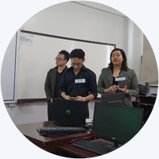

HSE-Archive proposes a focused and relevant web-based archive for The Hillside Echo. The proposal identifies clear needs for preservation, searchable access, alumni engagement, and features such as publication modules, alumni directory, and a feedback mechanism. Strengths include a clear problem statement, a useful conceptual framework, and a reasonable methodology using Agile. Areas to improve are making objectives outcome-focused, adding a clear ERD and database schema, tightening the literature synthesis, providing concrete sprint plans and deliverables, and adding measurable acceptance targets for evaluation.
| Item | Evaluation |
|---|---|
| Cover and Chapters 1-3 | Follow the format of the provided templates (font, indentions, etc.) Incorrect order of sections (Operational Definition of Terms, Scope and Limitations of the Study, Significance of the Study) |
| Overview of Current Technology | Good historical context and clear description of the current manual and ad hoc practices. Suggestion: shorten long paragraphs and add a sentence linking these gaps specifically to users of The Hillside Echo. |
| Desired State of Technology | Well described. Consider adding 1-2 short user scenarios showing how students, staff, or alumni will benefit. |
| Statement of the Problem | Problems are relevant and well listed. Revision: restate as one General Problem and 3 to 5 Specific Problems so objectives map clearly to problems. |
| Objectives | Objectives are written as features. Revision: rewrite them to be outcome-focused (for example, "to make it easy for alumni to find and claim their articles"). Revise the Objectives so each one answers a specific problem. Use action words like design, develop, implement, evaluate. |
| Theoretical and Conceptual Framework | Task-Technology Fit is appropriate and explained. Suggestion: add two more theories such as DeLone and McLean IS Success Model or Technology Acceptance Model, and briefly show how each links to evaluation measures. |
| Definition of Terms | Follow format |
| Scope and Limitations | Scope is clear on included sections and intended users. No additional photos and video embedding not allowed. Suggestion: explicitly state exclusions, minimum device or bandwidth requirements, and that full institutional integration is out of scope. |
Significance of the Study |
You identified the key beneficiaries well: Hillside Echo members, the university, the community, and future researchers. This makes the study relevant and clearly connected to real stakeholders. To improve, expand your discussion and make the benefits more specific and practical. For example:
Adding measurable or concrete examples will make the significance stronger and easier to defend. Sample: What to Include (Scope):
What to Exclude (Limitations):
|
| Item | Evaluation |
|---|---|
| Coverage | Good collection of international and local systems such as OnBase, BibSonomy, and university publications. Citations and examples are present. |
| Synthesis | The synthesis is informative but general. Revision: identify 2 to 3 specific gaps in existing systems and explain how HSE-Archive addresses them (for example, tailored alumni claiming, print media preservation, or integrated feedback). |
| Screenshots and Captions | If you include screenshots, label them as figures (Figure 1, Figure 2), add clear captions describing what is shown, and cite the source in APA. Refer to figures in the text. |
| Item | Evaluation |
|---|---|
| Development Method | Agile (Scrum) is a good choice for your project. To make your plan clearer and easier to follow, you should also state how long each sprint will be (for example, two weeks) and what you expect to finish in each sprint, such as a module, testing, or documentation. This will make your development plan more practical and organized. |
| Design and Data | You already mentioned design activities, wireframes, and UML diagrams, which is good. To make this section stronger, also include an ERD (Entity Relationship Diagram) and a sample database schema. These will clearly show how articles, users, and metadata are stored and connected in your system. |
| Development Tools | You listed the technologies you will use, which is good. To improve this part, add a short explanation of why you chose each tool (for example, React for a dynamic interface, Laravel for security, MySQL for structured data). It will also help if you create a simple table that matches each tool with its purpose so readers can easily see how each one supports the system. |
| Testing and Evaluation | Your testing steps are good, especially since you included User Acceptance Testing (UAT). To make this section stronger, add clear success targets, such as aiming for a usability rating of 4 out of 5 or at least 95 percent accuracy in searching. Also, explain how many users or participants will be involved in the testing so the results will be reliable. |
| Deployment and Maintenance | You already explained deployment and maintenance, which is good. To make it more complete, add details on how you will handle backups, how long data will be kept (data retention policy), and what security measures you will use, such as role-based access for different users and encryption to protect sensitive information. |